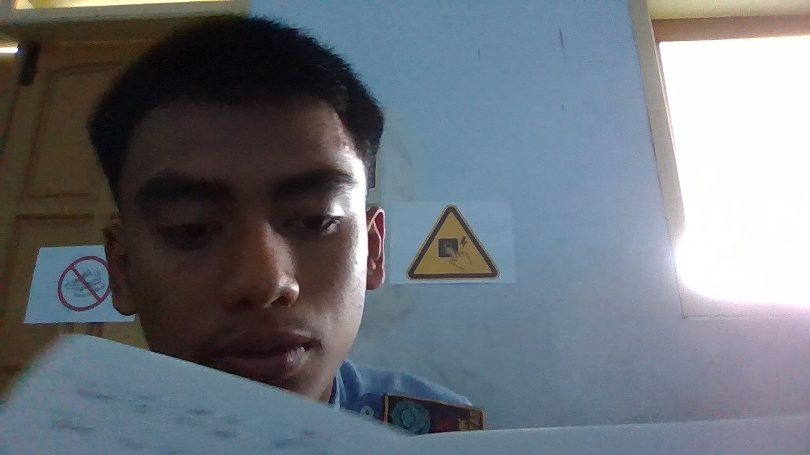

HALO,SAYA ADEN HAMDAN RADITYA
siswa kelas X SMK, calon Junior Web Developer di Kelas Industri UBIG.
Lihat Proyek SayaTentang Saya
Saya tinggal di selorejo blitar dan senang mencoba hal baru di dunia teknologi. Saya ingin bisa membuat website yang bermanfaat untuk sekolah dan UMKM di sekitar rumah. saya meiliki ketertarikan dalam dunia teknologi,khususnya dalam pengembangan web. Saya ingin terus belajar dan mengembangkan keterampilan saya di bidang ini, serta berkontribusi pada proyek-proyek yang dapat memberikan dampak positif bagi masyarakat. Saya senang mencoba hal-hal baru dan selalu berusaha untuk meningkatkan kemampuan saya dalam pemrograman web. Saya percaya bahwa dengan tekad dan kerja keras, saya dapat mencapai tujuan saya menjadi seorang web developer yang handal. semoga dengan belajar di kelas industri UBIG saya bisa menjadi seorang web developer yang handal dan dapat memberikan kontribusi positif bagi masyarakat.
Hobi
- volly
- Membuat content sound horeg
- erakit audio amplifier
- Melihat karnaval
Cita-cita
Menjadi Full Stack Web Developer. Langkah yang saya rencanakan:
- Menuntaskan Kelas Industri UBIG sampai Semester 4
- Magang di perusahaan teknologi
- Bekerja sebagai Web Developer
Keahlian
Jadwal Belajar
| Hari | Waktu | Kegiatan |
|---|---|---|
| Senin | 19.00 - 20.00 | Membaca ulang modul |
| Rabu | 19.00 - 21.00 | Mengerjakan tugas praktik |
| Jumat | 19.30 - 20.30 | Merekam video dan menulis laporan |